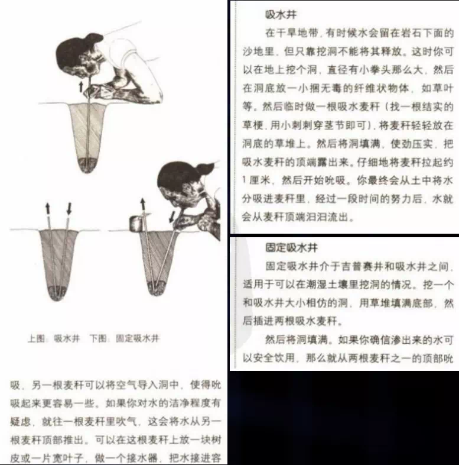
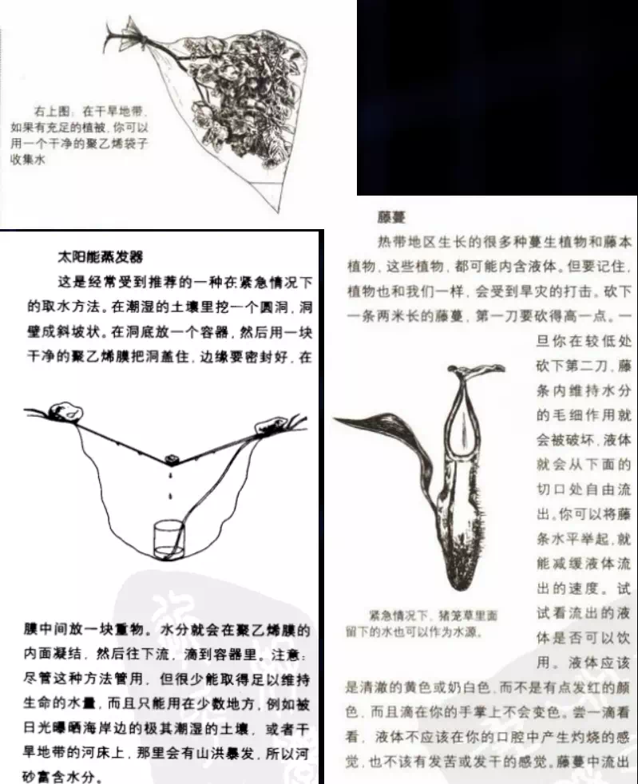
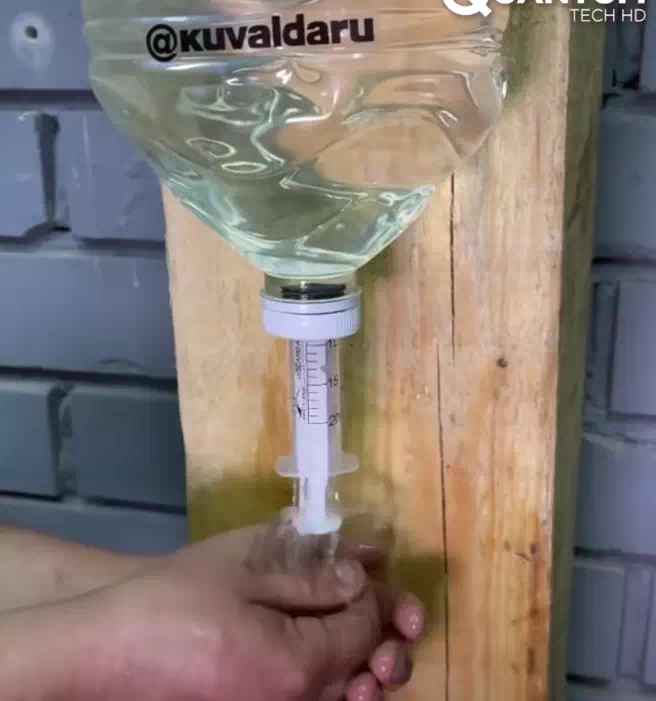

 吸水井  将藤蔓底部切成四十五度口，将水滴入盛水器具中；应注意选择特别能产汁液的茎，由底部回溯到茎的端处砍一道“V”型的深痕，然后由靠近地面处砍断该茎，站树汁从断口处流出至口中或容器里。记住先在茎的顶端砍一“V”型深痕，而不是先砍底部，那样茎中的树汁会由于毛细管现象而向上运动的。 在地面挖一大约宽90厘米，深45厘米的坑。坑底中央放一收集皿，在坑上悬一条拉成弧形的塑料膜。光能升高坑内潮湿土壤和空气的温度，蒸发产生水汽。水汽逐渐饱和，与塑料膜接触遇冷凝结成水珠，下滑至收集皿中，这种方法适用于沙漠地区或者日夜温差相当大的地区。在24小时内至少能收集1品脱（55毫升）水。 将密闭塑料袋绑在树叶茂盛的树枝上，藉由树叶蒸发水分凝结在塑料袋中。  节水器